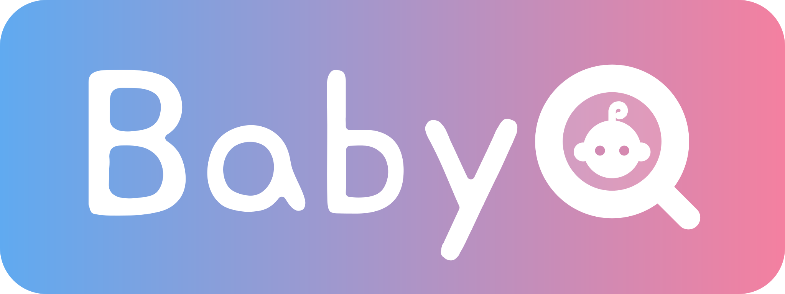

赤ちゃんの秘密を、みんなの喜びに
性別を選んでね
ふたりの性別を選んでね
入れると「あと○日」とカレンダーが出ます。
合言葉を知っている人だけが答えを見られます。合言葉はURLとは別に、メッセージや電話で伝えてね。
この日時になるまで、発表ボタンは押せません。みんなで同時に見たいときに。
多いほどドキドキが長くなります。おじいちゃん・おばあちゃんには3〜5回がおすすめ。
🎉 できました！ カードで送りましょう
メッセージを短くしてね（いまは URL が長く、カードのボタンに入らないかもしれません）。
⚠️ 発表まで進むと、答えが見えてしまいます。見た目だけ確かめたいときは、発表してよい日時を先の日付にしてから開くのがおすすめです。